|
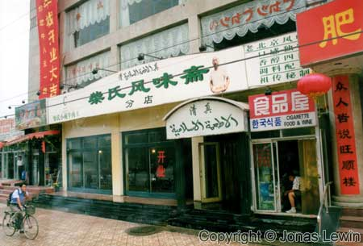
Some pictures I shot, while riding the Airport bus towards the Beijing
Central Station. In my mind, it reflects quite much, how I see Beijing in
general.
Here we have some local store, with no customers, so the clerk is just
sitting and reading a magazine. If he is not reading, he is most often
smoking, or chatting with the neighbor.
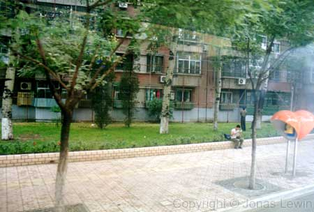General
apartments. I've never been inside one, so I can't tell you what they look
like inside.
People sitting on the street, reading something.
Typical phone booth. Just like the ones we had in Sweden in the 70's,
somewhat different size and colour.
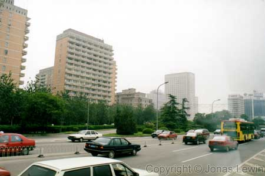
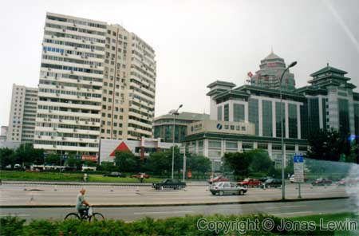
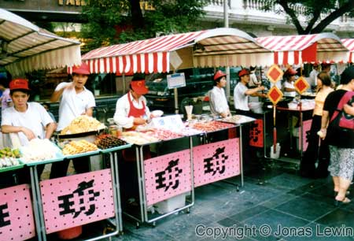Hungry?
Let's have a look at what they have to offer, as this is a very popular
place by the locals...
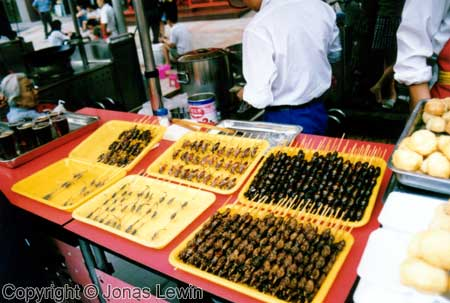Scorpio,
Butterfly cocoons, and some kind of beetle.
Not the food that pleases my eye. I didn't dare to try this out.
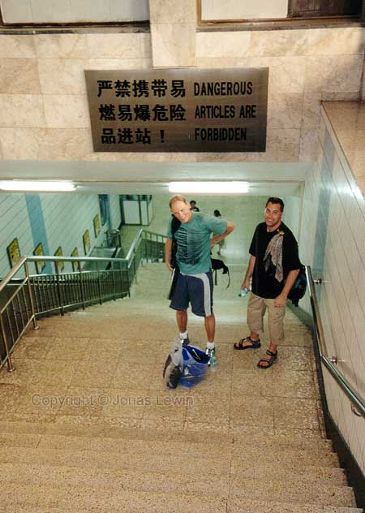"Dangerous
articles are forbidden". Talk about a great sign. I think that the
authorities really covered everything in this small sign.
The sign you see
when you are going down to the subway.
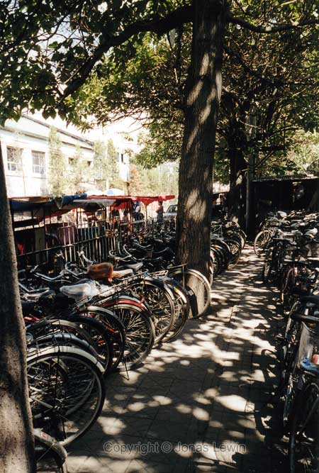To
us westerners, this image represents Beijing with perfect clarity. However,
the times are changing, and more and more Chinese people are starting to
drive cars.
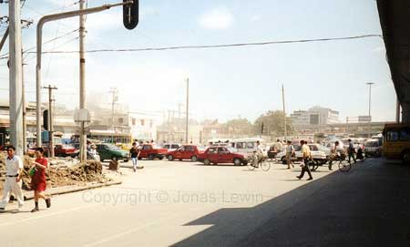A
very typical street, and the general traffic situation.
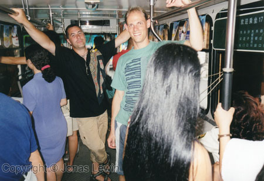Inside
the bus that took us down town from the hotel. I had to watch my head all
the time, while the Chinese had to watch out for my elbows.
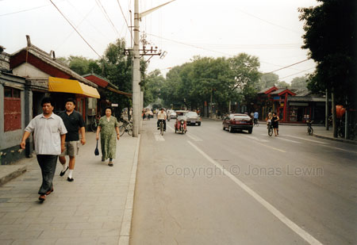A
general street, in the not so busy part of Beijing.
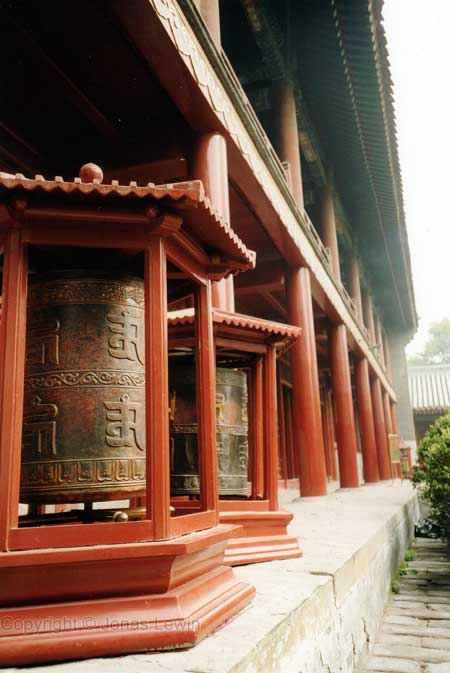Prayer
wheels in the Lama Temple. I don't really know when they are used.
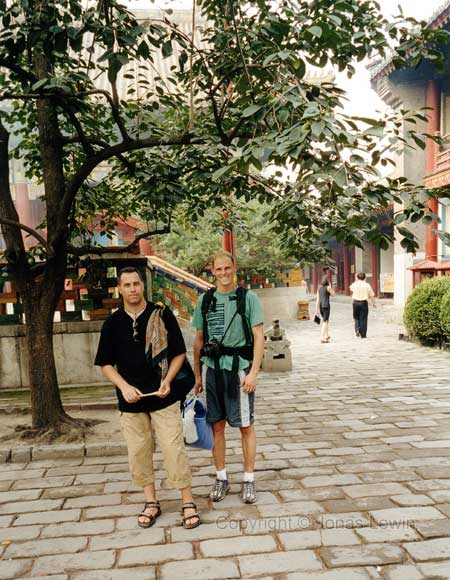Inside
the Lama Temple.
|